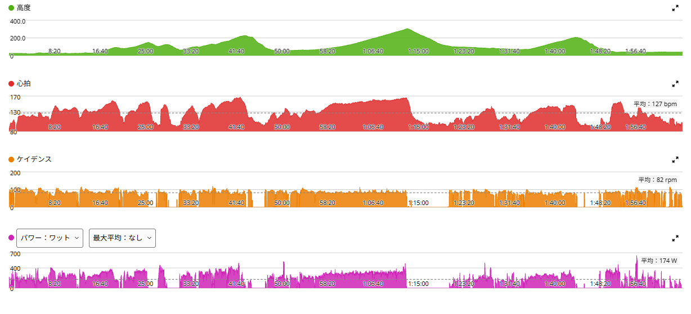
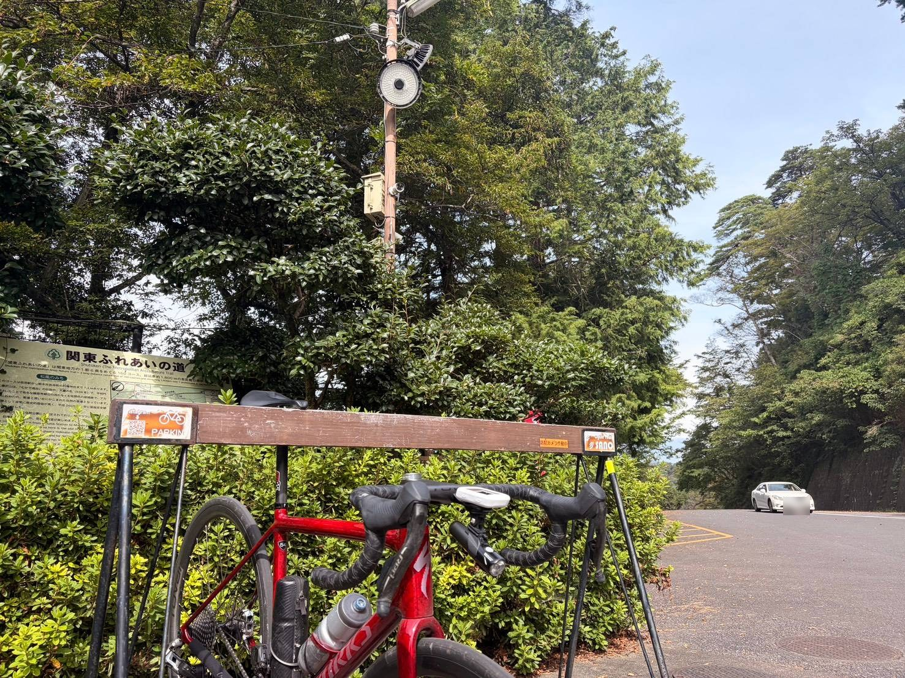

前半は抑えて、後半の琴平でしっかり踏む。太平反時計回り
今日は「太平反時計回り」。最近は膝の違和感があったので、しばらく最大出力で踏み込む練習は控えている。ただ、もう自転車に乗っているぶんにはほぼ問題なし。
だから今日は、必要以上に出力を落とすのではなく、前半は抑える、そのぶん距離を少し長くする、後半の琴平で高い出力を維持する。そういう形で走ってみた。

51.60km・NP238W・TSS152.8
- 全体51.60km / 2時間03分24秒 / 獲得796m / 平均気温25.1℃
- 負荷平均174W / NP238W / IF0.864 / TSS152.8
- 心拍・回転平均127bpm / 最大168bpm / 平均82rpm
- 効果有酸素TE4.3 / 無酸素TE0.3 / 運動負荷210

今日から定番、「太平反時計回り」
- 順番名もなき峠 → 下皆川街道 → 登り返し → 太平山 → 琴平峠 → 唐沢山
なお、同じ太平山・琴平・唐沢でも、これまでの記事とは区間の取り方が違う。今日の唐沢山は7分23秒・244Wで、10月5日の8分21秒・302Wより低いワットなのに1分速い。区間が違うからで、今日の数字は過去のタイムとは比べない。
前半は「最大の8割」のつもり。でも短い登りは300W台
- 名もなき峠2分13秒 / 321W
- 下皆川街道2分18秒 / 325W
- 登り返し56秒 / 357W
- 太平山7分24秒 / 303W / 心拍平均148bpm・最大166bpm
今日は太平山までの登り区間では、最大出力を狙わなかった。感覚としては、自分の最大の8割くらい。……と言いつつ、数字だけ見ると結構踏んでいる。
でも今日は、ここで出し切るつもりはなかった。以前ならこういう区間で「どこまで出せるか」を試したくなるところだが、今日はそこを抑えている。
抑えた分を、琴平の15分で使う
- 琴平峠15分08秒 / 平均292W / 心拍平均155bpm・最大166bpm / 84rpm
その代わり、今日のメインにしたのが琴平峠。FTP設定275Wに対して約106%。15分以上、FTPを少し上回る出力を維持した。
短い登りでピークを出すのではなく、高い出力を長めに維持する方向。個人的にはこの配分の方が合っている気がする。
唐沢山は追い込まずに締めた
- 唐沢山7分23秒 / 平均244W / 心拍平均139bpm・最大147bpm

ここは完全に追い込みなし。前半の短い登り、太平山、そして琴平峠までで十分に負荷は入っている。最後まで全部300W前後で押し切るより、今日はこれくらいでちょうどいい。
弱く走ったのではなく、ピークを削って持続に振った
膝の違和感があったからといって、全部を低強度にするつもりはない。今日もNP238W、IF0.864、TSS152.8で、普通に負荷は高い。今日は「弱く走った」のではなく、「ピークを削って、持続に振った」という方が近い。
膝は今日も違和感が出なかった。感覚としてはほぼ問題なさそうなので、今週いっぱいは315W×5分×5本のような最大寄りの高強度だけ控えて、違和感が出たらそのとき対処する。
今日やってみて思ったこと
これまでは、登りが来るとついそこで頑張ってしまうことが多かった。でも、距離を長くしたいなら、全部の登りで出し切る必要はない。前半を少し抑えて、後半にちゃんと使える脚を残す。短い登りは結局300W台が出ていたが、太平山までは出し切らずに走り、今日はそれがうまくできた。琴平で292Wを15分。しかも膝も問題なし。
今日は「全部で頑張る」のではなく、「どこで使うかを決めて走る」というライドだった。こういう走り方も、富士ヒルに向けてかなり大事になりそうだ。
次に見るポイント
- 琴平太平山までを抑えた状態で、後半の琴平をどこまで安定して走れるか
- 距離距離を少しずつ伸ばしても、後半の出力を維持できるか
- 全体の配分唐沢山まで含めて、全体の配分をどう作るか。前半の上限を区間の長さで決める
- 琴平の292WFTP設定の約106%。FTPを見直すかは、同じ区間をもう一度走ってから決める
- 高強度今週いっぱいは最大出力系を控える
- 膝基本的に問題なしとして扱い、違和感が出た場合だけ調整する